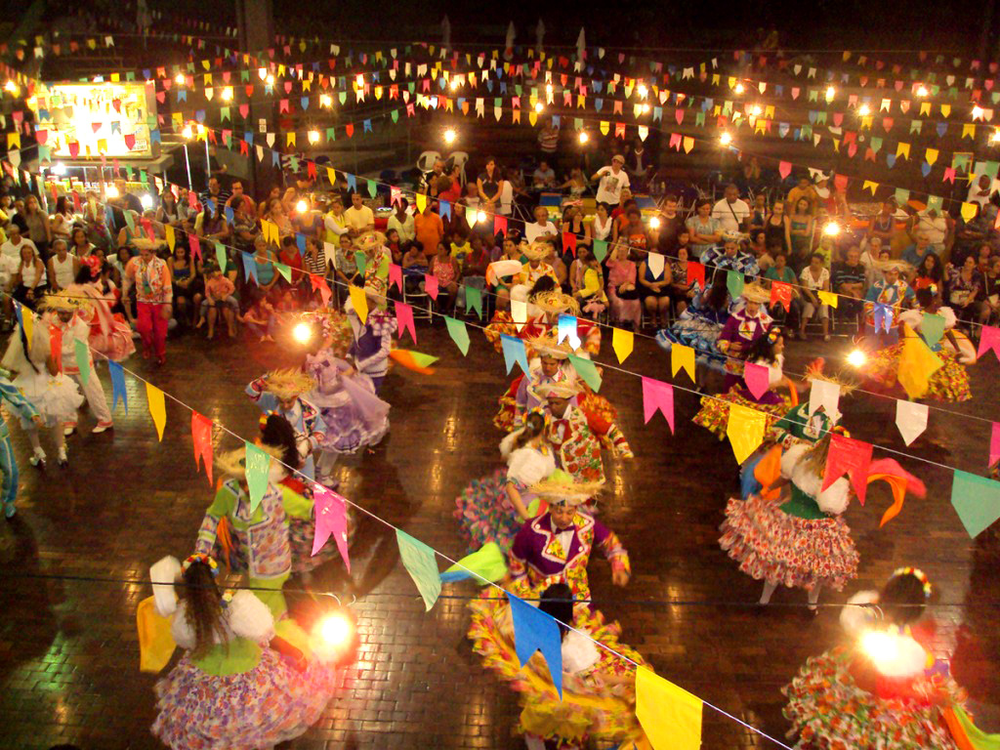

Galeria de Fotos



A Festa Junina é uma celebração popular brasileira que ocorre no mês de junho, em homenagem a santos como Santo Antônio, São João e São Pedro. Caracteriza-se por danças típicas como a quadrilha, comidas deliciosas como milho verde, canjica e pé-de-moleque, além de brincadeiras tradicionais.
A Festa Junina tem origem em tradições pagãs europeias, que celebravam o solstício de verão e a transição entre primavera e verão. Com a cristianização, a Igreja Católica adaptou essas festas, associando-as à celebração dos santos João Batista, Santo Antônio e São Pedro, que são comemorados em junho. No Brasil, a tradição foi trazida pelos colonizadores portugueses no século XVI, e ao longo do tempo, incorporou elementos indígenas e africanos, transformando-se na festa junina que conhecemos hoje.